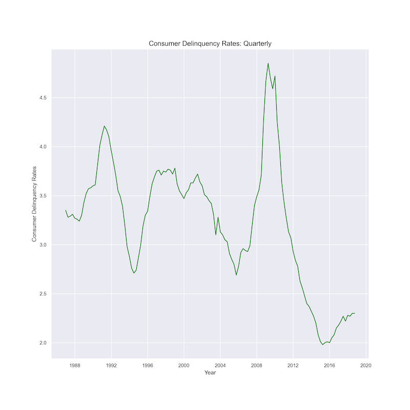
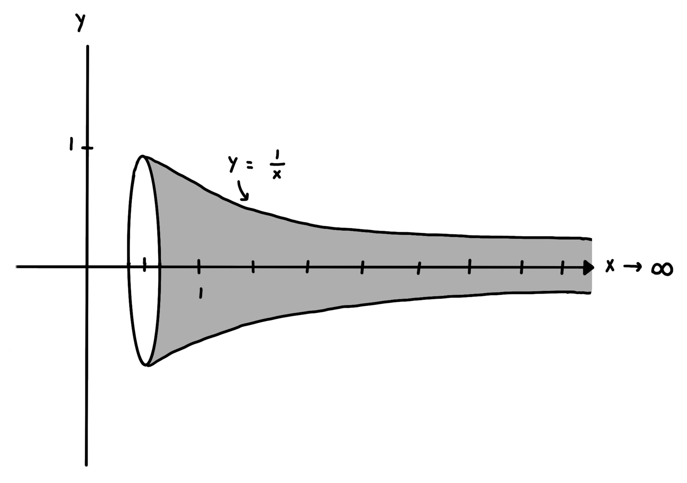
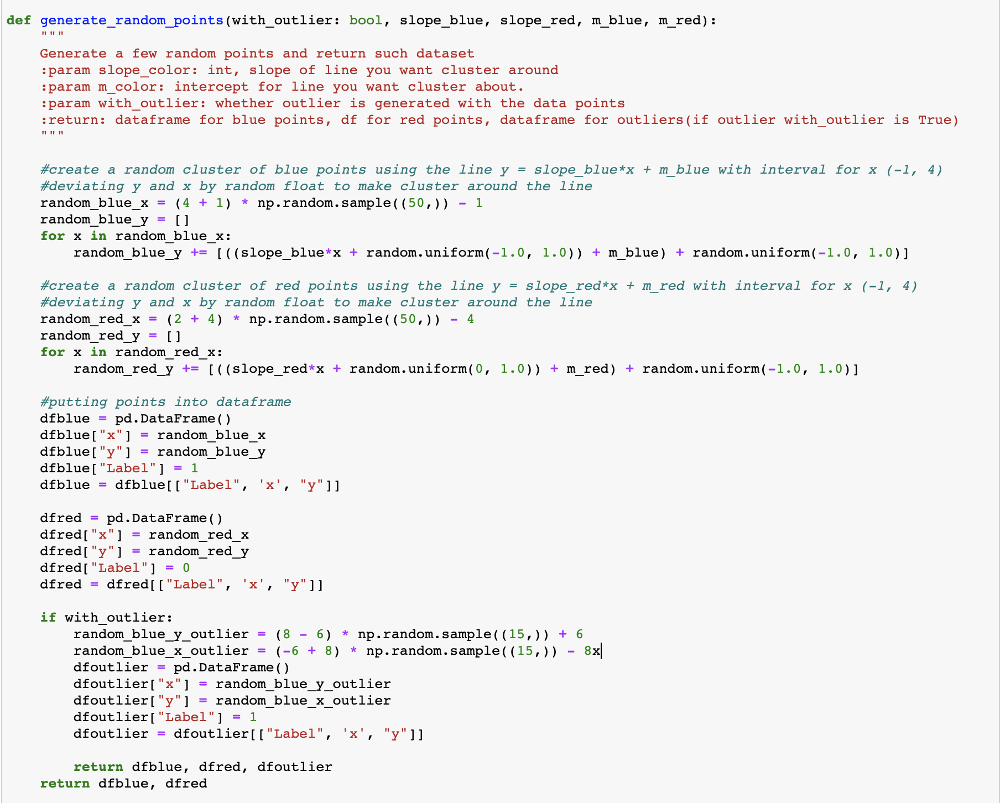

The first question anyone asks you after you've told them you're a college student is "What do you study?".
When I respond, I'm often met with comments like "That sounds like a lot of work!", and
"You must be smart!" – which really means "Why would you do that to yourself?" and "Are you able
to handle that?". This page serves to answer the former, the latter is still up to debate.
An Economics and Math major with a Computer Science minor sounds like a lot. And it is, but not nearly as much
as you probably think. This "portfolio" essentially serves to share my some of my favorite aspects of the fields I study,
and maybe prove that Math is cool.
My Journey Into Economics
I came into college like every 18 year old girl who was good at science in high school and decided Neuroscience was for me. After about a month of college, Neuroscience was decidedly not for me. The reason I ended up majoring in Economics, despite the fact that I had taken AP Macro in high school and declared it extremely boring, is a long story.
"The political problem of mankind is to combine three things: economic efficiency, social justice and individual liberty."
- John Maynard Keynes
This is my favorite quote not just from Keynes, but from any economist. I often find myself at odds with people I align with politically and socially. Not because I disagree with them, but because I always discuss the cost of any policy, even if its one I support.
This is a graph I created with python for my current research project. We are working with consumer delinquency rates. Our interests are in the large spikes you see, and if they lead to increases in public debt. The largest spike you see in 2008 is due to the housing market crash, delinquencies rates on mortgages sky-rocketed.
The title page to my research paper.
Current Work
This whole semester I have been working on a research paper with two other collaborators, Supreet Bhavireddy and Adi Jahic. Our course is about one of the most import topics in econometric analysis, time series econometrics. Time series models are extremely important to economics. At the most basic level, time series models regress current values on past values. For example, we can use and AR(1) model to regression the current inflation rate on the inflation rate from the inflation rate from the year before. We use these models to forecast future economics variables in the short run. A lot of economic fluctuations depend on past values, inflation this year not independent from inflation last year.
We are still in the process of conducting tests and constructing our models, but our paper is exploring the relationship between consumer delinquency rates and federal debt. Our theory is that when the economy is approaching a recession, delinquency rates rise, and in response to a recession, federal debt rises because of an increase in government spending. We are in the process on constructing a VAR model and hopefully also use Co-integration to examine their relationship.
Why Math?
On my first advising meeting in the Economics department my advisor silently looked over my transcript, and asked me "Are you good at math?". I told him that I was. He then said "Okay, you're going to do the Math major too.". He then moved to Ireland I never heard from him again.
Math was the subject I had always been best at, but I had never considered studying it post-college because it didn't seem like something that would be interesting. But as I began to study it more, I realized the math is incredibly interesting. Math is cool.
A diagram of Gabriel's Horn. Drawn by Jenna. as X goes to infinity, the horn's tail extends to infinity.
Gabriel's Horn equations written by Jenna in LateX.
My Favorite Math Problem
Gabriel's horn is a famous Calc 2 problem. These equations calculate the volume and surface area of a long horn shape as the tail of the horn tends to infinity. When you calculate the surface area using indefinite integrals, you will find that it is infinite. However, when you calculate volume, is just simply π. This is a mind-bending idea. How is it possible for a solid to have infinite area, but a finite volume? If you know a bit of Calc 2, this problem is doable on your own, and you can see how the math works. Even if you don't, the concept itself is still fascinating. I hope this has convinced you math is cool.
My Love-Hate Relationship with Coding
Coding is not only something I study, but it has also become my job, and now my hobby. I am currently in two CS classes and I am a CA for another. Coding has begin to bleed into my dreams. I wake up in the middle of the night because my mind started to code. I have nightmares of null-pointer exceptions. Despite all this, I really do like to code. You can find some code I've written or the code for this website on my Github profile!
An algorithm written by Jenna.
This block of code is a triumph and defeat for me. I spent a long time designing and tweaking this algorithm. But I was so relieved when It worked. The algorithm creates a two clusters of points about two lines, which you can specify the slope and intercept for. I wrote it for my CS 506 class. Apparently we could just use a method from the NumPy library, but I wrote this before I knew. While Im upset by the lost time, I'm proud I could write an algorithm on my own.
A network graph I made in Python for my Data Science class.
What progress have I made in a year?
A bit over a year ago I began CS 111 and coded for the first time in my life. Since then I have been constantly entrenched in coding. My best language by far is Python, which is common among most Computer Science students at Boston University. My next best would be Java, but its not a language I spend much time with. The purpose of this minor is so that I have the coding skills to do economic research, and Python is the one of best languages to do any sort of math, modeling, or visualizations. Java is object-oriented, I don't do much object oriented programming. I know a bit of R. I can use Stata, but I have a hate-only relationship with it. Python can do everything Stata does, and Stata has horrible documentation.